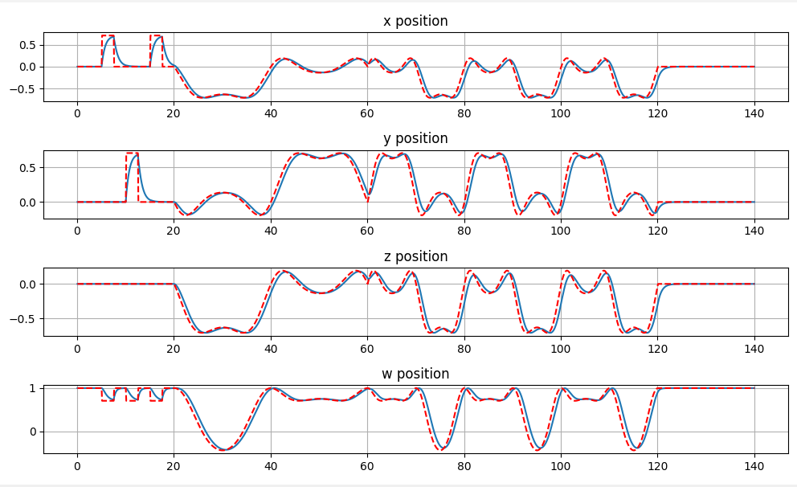
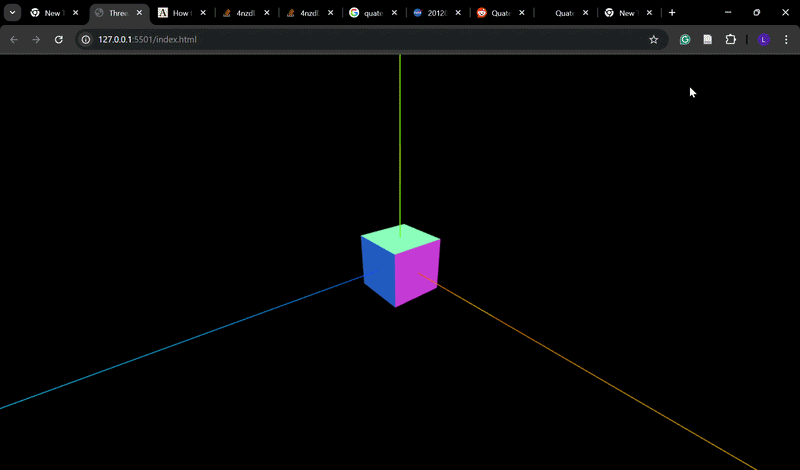

Exploration of quaternion-based attitude control and dynamic modelling.


As part of learning about rigid body dynamics and control, I implemented a quaternion-based attitude control system in Python, with the long-term goal of simulating the control system of a satellite.
I modelled quaternion rigid body dynamics, including angular velocity and orientation representation, and designed a feedback control system to track a reference input.
This project served as a foundation for exploring attitude control methods before integrating them into a more complex system.
As shown in the animation, the system is able to track a changing reference input reliably and without instability.
Next steps include introducing disturbances and additional satellite subsystems to improve modelling realism and evaluate more robust control methods.